Microsoft Ready 2019
AI-APP-ST315
Rock the Bot: build a highly scalable Bot using Bot Framework, ASP.NET Core and Kubernetes
Alessandro Bigi (albigi)
Roxana Gheorghe (rogheorg)
CONTENTS
- CONTENTS
- INTRODUCTION
- GETTING THINGS READY
- EXERCISE 1 - AZURE SETUP
- EXERCISE 2 - BUILD THE BOT
- EXERCISE 3 - CREATE AND DEPLOY THE CONTAINERS
- EXERCISE 4 - CONFIGURE AKS
- [OPTIONAL] EXERCISE 5 - PUBLISH THE BOT
- EPILOGUE
INTRODUCTION
Estimated time
The lab was designed and tested in order to take at most 120 minutes for attendees aiming at 100% completion (optional tasks excluded).
However, some of the tasks may vary in duration based on unpredictable external factors (mainly networking and Azure deployment operations).
Not to worry though! In the unlikely event you won’t be able to complete all the lab exercises, we’ll share all the details on where to find the lab documentation and exercises at any future point!
Objectives
After completing this lab, you will be better at:
- Building an intelligent Bot using the Microsoft Bot Framework v4 SDK
- Using Microsoft Translator API to add real-time translation skills to your Bot
- Understanding the basic architecture of conversations in the Microsoft Bot Framework
- Using the Bot Framework Emulator to test your Bot
- Understanding the basic architecture of a ASP.NET Core Web Api app
- Creating a container image using Docker client
- Deploying a container image to Azure Container Registry
- Creating an Azure Kubernetes Service to host and manage containerized micro-services apps
- Create an Azure Bot Service and publish your bot to several channels
Prerequisites
This document is designed to walk you through the whole lab and provide you with the necessary information to cover the main session takeaways. However, to take the most out of the lab you are recommended to have:
- Good knowledge of the Azure Portal
- Introductory knowledge of ASP.NET Core
- Introductory knowledge of Docker and containers
- Basic understanding of the Azure Bot Service architecture
- Basic understanding of micro-services architecture design
- Introductory knowledge of Kubernetes or other orchestration services
Lab Overview
The lab consists of 4 exercises, to be completed in sequential order.
-
You will create all the necessary resources on Azure. Namely an Azure Container Registry (ACR) and an Azure Kubernetes Service (AKS).
Expected time to complete: 15 minutes
-
You will build a v4 chat Bot that depends on a services API app. Then, you will add translation services to it. Eventually, you will test the Bot locally using the Bot Framework Emulator.
Expected time to complete: 30 minutes
-
You will create two containers to host the core Bot application and the services API it consumes. Then, you will upload the containers to the ACR and eventually create a Kubernetes workload in AKS to deploy and host the containers in two Kubernetes services.
Expected time to complete: 30 minutes
-
You will create an Azure Bot Service to publish your Bot hosted on AKS using the DirectLine and Skype channels.
Expected time to complete: 30 minutes
Solution Architecture
Upon completing this lab you will have implemented a solution similar to the following:

Computers in this lab
You need to use just one Virtual Machine, running Windows 10 and Docker for Windows. The VM settings are reported in the table below. Before you begin the lab, please make sure the VM is started and you are logged on using the credentials provided below:
| Username | Password |
|---|---|
| Ready19 | ReadyPassword! |
GETTING THINGS READY
To get started you will need:
-
an Azure subscription
You can use your own or use the Azure Credentials provided with this lab (more info on the right ribbon of the main lab screen)
-
one Container Registry (ACR)
-
one Azure Kubernetes Service (AKS)
-
Docker client with the Docker CLI installed
-
The Azure CLI installed
Once identified the Azure Subscription to use, please open a browser on the VM and login to the Azure Portal (http://portal.azure.com).
EXERCISE 1 - AZURE SETUP
Task 1 - Create a new ACR
Once logged in to the Azure portal, create a new resource of type Container Registry:

Confirm selecting Create on the outer blade.
Fill in the required information in the new blade:
- Registry Name: a unique name for your ACR. You can pick one of your choice but an easy name is recommend (hint:
youraliasACR) - Resource Group: you can create a new one or pick an existing of your choice
- Location: select West US for lower latency
- Admin User: Disabled
- SKU: Standard
The form should resemble the following:

Hit Create to start the deployment.
It may take a few minutes for the new ACR to be fully deployed. Once done, you will be notified in the Azure Portal.
Let the deployment run and move on to the next task.
Task 2 - Create a new AKS
In the Azure Portal, create a new resource of type Kubernetes Service:
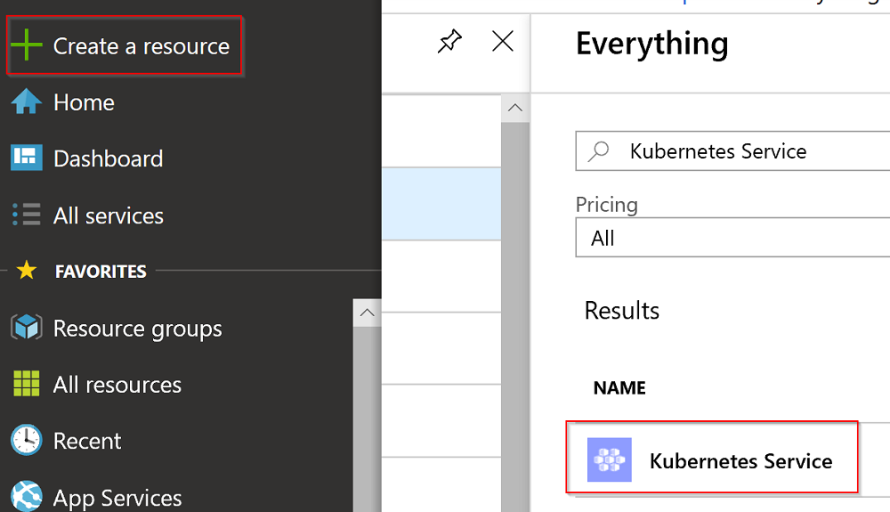
Confirm selecting Create on the outer blade.
The setup of AKS requires a few steps:
-
Fill in the first tab (Basic) as follows:
- Resource Group: select the same resource group used before
- Kubernetes cluster name: select a friendly name for your AKS cluster (hint:
youraliasAKS) - Region: select
West USfor lower latency - Kubernetes version: leave the default (latest)
- DNS name prefix: this is the DNS name prefix of your cluster, used when connecting to it for administration. Select one of your choice (hint: reuse the cluster name in lower letters)
- Node size: click on Change size and select the
Standarb B2ssize (2vcpus, 4GB memory). Your workload will be light enough to accomodate small node instances. - Node count: leave the default (
3nodes) - Virtual nodes:
Disabled
The form should look like this:

Click Next: Authentication > and proceed to the next tab.
-
Make sure the Authentication section uses the defaults, shown below

Click Next: Networking > and proceed to the next tab.
-
In the Networking section you need to
enableHTTP Application Routing:
Click Next: Monitoring > and proceed to the next tab.
-
The Monitoring section needs to have the Enable container monitoring flag switched to
No
You may now click on Review + create to review the AKS settings and hit Create to start the deployment.
The Create button might be disabled for a few seconds while the AKS setup is being validated. Please be patient.
You can regularly check on the AKS deployment by leaving the Azure page open:

The deployment of the Kubernetes Service might take a while (between 5 to 10 minutes). While Azure deploys the cluster, please advance in the lab and move on to the Exercise 2.
EXERCISE 2 - BUILD THE BOT
In this exercise you will clone a GitHub repo to get the base code of your Bot. You will have to complete the code to build the bot. Eventually, you will test the bot running on the dev VM.
You can find the code snippets used in this exercise in the CodeFile.cs file.
Task 1 - Clone the source repo
The base code to start building the bot is located at https://github.com/albigi/Ready19-RockTheBot.
You can either connect to GitHub and download the code as a zip file, or clone the repository on your machine.
To clone the repo, open the Code folder on the Desktop (any other folder of your choice would do!). While holding SHIFT, right click on the folder and select Git Bash here. The Git command prompt should appear.
For this task you can also use a normal command prompt or powershell.
Once the shell is open, type:
git clone https://github.com/albigi/Ready19-RockTheBot.git
In Explorer you should now see a folder named Ready19-RockTheBot. This is the main solution folder!
You will notice it contains two subfolders:
- RockTheBot is the actual bot folder!
- ServicesProviderWeb is a service ASP.NET Core Web API the bot relies on to access some of the data it needs. Its role will become clearer later in the exercises.
Before moving forward, you should initialize the Azure CLI. In the main solution folder run the initialize.bat script and login to Azure using the same credentials you used in the previous exercise.
In case you are using your own account to login to Azure and you have access to multiple subscriptions, the previous script will give you access to the default subscription. To switch subscriptions, you can use
az account set --subscription "SUB NAME OR ID"
Task 2 - Complete the code
You will now start working on the actual bot code. This version of the code was slightly customized out of the default Azure Bot Service template. But don’t worry, you will be adding all the juicy details and customizations!
If you try to compile the code as is, it won’t work. This is expected and you will have to complete it reading on.
First, open the RockTheBot folder in Visual Studio Code: right click on the folder in Explorer and select Open with Code.
At some point Visual Studio Code should prompt you to restore unresolved dependencies for the project: accept and click Restore.
1. Translation middleware
The new Bot Framework v4 had the ASP.NET Core integration as one of its main goals. Actually, a v4 bot is nothing else than a ASP.()[]NET Core Web API with specialized middleware.
Indeed, middleware is one of the bonus aspects of the v4 SDK: expanding and customizing the bot functionality is now much easier.
A middleware is a piece of code that is assembled into an app pipeline to handle requests and responses. Middlewares are executed one by one, in the order in which they are declared in the Startup.ConfigureServices() method.
The bot relies on the Translation Middleware to translate user text. It reads the user’s preferred language from the user’s state and, if it is different from the default language (English), calls the Microsoft Translator Text API to translate from and to the user’s preferred language.
This means the bot always receives utterances in English, while users can transparently interact using their preferred language.
Users can change their language preference anytime, and since this gets written to the user state, the middleware will read this state and instantly modify its behavior to honor the newly selected preferred language.
The first step is to declare the translation middleware in the ConfigureServices method in the Startup.cs file.
Locate line 140 which should look like this:
var translator = new MicrosoftTranslator(translatorKey);
After defining the translator object and connecting it to the Translator API via the tranlator key we need to add the translation middleware to the API pipeline.
You need to complete the code by adding the lines below:
var translationMiddleware = new TranslationMiddleware(
translator,
userState.CreateProperty<string>("LanguagePreference"));
options.Middleware.Add(translationMiddleware);
Remember you can find the missing code in the CodeFile.cs file.
Notice the translation middleware is added simply by passing its instance to the options.Middleware object of the Bot SDK.
2. Create the language selection card
Now the translation middleware is plugged-in, it is time to construct the card that lets the user select their language.
If the bot’s response to the user needs to contain something other than text, we can use a card to display any combination of text, speech, images, buttons, and input fields. There are different types of cards, depending on what type of interaction you are designing for your bot.
We have used a HeroCard as a simple way to present buttons to the user. The HeroCard allows us to create a list of suggested actions that will be shown to the user for a single turn of the conversation.
In the RockTheBot.cs file, locate the SendLanguageCardAsync method:
private static async Task SendLanguageCardAsync(ITurnContext turnContext, CancellationToken cancellationToken)
{
var reply = turnContext.Activity.CreateReply("Choose your language:");
reply.Attachments = new List<Attachment>();
List<CardAction> cardButtons = new List<CardAction>();
# TODO : add the different actions for each language.
//do something awesome here
HeroCard heroCard = new HeroCard()
{
Buttons = cardButtons,
};
Attachment attachment = heroCard.ToAttachment();
reply.Attachments.Add(attachment);
await turnContext.SendActivityAsync(reply);
}
You should now complete the method and define what the HeroCard card should look like.
Hint: you can peek at the implementation of a HeroCard for another user prompt in the method SendSuggestedActionsAsync
The full code block is also available in the CodeFile.cs file.
3. Keeping track of the user state
If the bot is to send a welcome message every time a new user conversation starts, which is usually a desired feature, it needs to determine whether the message has already been sent. In addition, the bot needs to keep track of the users preferred language. Both of the above are typical situations where the bot state comes in handy.
You can store and retrieve state data that is associated with a user, a conversation, or a specific user within the context of a specific conversation. State data can be used for many purposes, such as determining where the prior conversation left off or simply greeting a returning user by name.
Ideally, the bot state should persist the bot application lifetime. However that would require an out-of-memory external state provider (like a cache or a database).
For testing and prototyping purposes, you can use the Bot Builder Framework’s in-memory data storage, but for production bots, it is recommended to implement your own storage adapter or use one of the available Azure Extensions (Table Storage, CosmosDB, or Azure SQL).
In the OnTurnAsync method in RockTheBot.cs a flag has to be set in case the user has already been welcomed. After setting the DidBotWelcomeUser flag you also need to update the state objects to commit the state change so that it will be persisted.
The code needs to be added within the conditional statement to check whether the Activity we have received is of type Message, at line 80
if (turnContext.Activity.Type == ActivityTypes.Message)
{
# TODO :
//if our didBotWelcomeUser flag is set to false, set it to true
// Update user state flag to reflect bot handled first user interaction.
}
You need to complete the code by adding the lines below:
didBotWelcomeUser.DidBotWelcomeUser = true;
// Update user state flag to reflect bot handled first user interaction.
await _accessors.WelcomeUserState.SetAsync(turnContext, didBotWelcomeUser);
await _accessors.UserState.SaveChangesAsync(turnContext);
Remember you can find the full code fragment in the CodeFile.cs file.
Notice the _accessors object provides access to the different user states defined. In this case:
- The
WelcomeUserStateis used to persist information on sending the welcome message - The
UserStateis the default state which is updated at every conversation turn
Task 3 - Build and Run the Bot
Now that you are done editing the code, you need to make sure both applications actually compile and run.
-
Browse to the RockTheBot folder and open it in Visual Studio Code
-
Select Debug > Start Debugging (or hit F5)
VS might prompt you to either download the required assets or select the debugging environment to use. Select yes in the former case or .NET Core in the latter.
-
After a few seconds, you should see your bot is live!

It is now time to run the services API too!
Leave the VS instance running and move back to the main code folder. -
Repeat the steps
1and2but open the ServicesProviderWeb folder this time. You should have two instances of VS Code running at this point. -
In the new instance of VSCode press F5 and wait for the application to be online.
If this is the first time you open this project, VS might warn you also this time:

-
The browser will open and show you a 404 page: this is OK as the API does not use any welcome page.
-
To test the API is working fine, try to browse to http://localhost:5000/api/weather. You should get a similar result:
{"Name":"Seattle","Country":"US","Description":"fog","Temperature":"9.4C (49F)"}
At this stage, both applications are up and running!
Task 4 - Test the Bot
While it is fairly easy to test the API, you cannot test the Bot application just using a browser.
The Bot Framework Emulator is a troubleshooting application designed to help you test and debug your Bot.
-
Open the main code folder then browse to RockTheBot > RockTheBot and double click the file RockTheBot.bot
-
The Bot Framework Emulator (BFE) will open and automaically connect to the development endpoint
-
If the endpoint is correct and the bot is up and running, you should see the Bot’s welcome message:
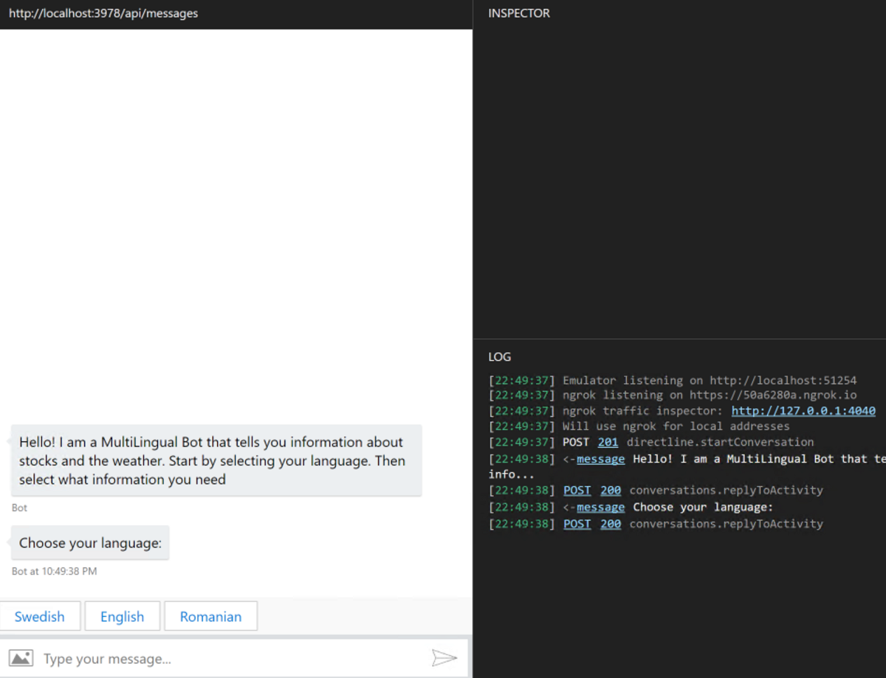
-
Select your favorite language and ask the Bot for the MSFT Stock value or the current weather
-
You should get a similar output

That's great! The Bot and API are working!
EXERCISE 3 - CREATE AND DEPLOY THE CONTAINERS
In this exercise you will create two containers using Docker, then upload them to the Container Registry and configure AKS to deploy them.
Task 1 - Create and run the containers
Stop both the Bot and API apps in case they are still running.
You can either stop debugging in VS Code or close the VS Code instances.

Now open the main code folder and browse to the directory RockTheBot. Right-click the file build.bat and select Open with Code.
Inspect the build file:
@ECHO OFF
set dir=rockthebot
cd %dir%
dotnet publish -c Release -o ..\bin\Release\
cd ..\
docker stop %dir%
docker rm %dir%
docker build -t %dir% .
docker run -d -p 80:80 --name %dir% %dir%
This file essentially accomplishes two tasks:
-
It produces the production build of the Bot:
dotnet publish -c Release -o …\bin\Release\
-
It creates a new container image named
rockthebotand starts a new container instance with the same name to host it. Notice the container is exposing the TCP port 80 as the production build of the Bot listens on the default HTTP port.docker build -t %dir% .
docker run -d-p 80:80--name %dir% %dir%
Before running the build file, you can peek at the DockerFile in the same directory. This file is used by Docker to build the image.
FROM microsoft/aspnetcore:2.0
# Copy the app
WORKDIR /app/
COPY ./bin/Release/ .
EXPOSE 80
CMD ["dotnet", "./RockTheBot.dll"]
The container build processs is fairly simple:
-
It uses a base image called
microsoft/aspnetcore:2.0which is publicly available from Docker Hub: https://hub.docker.com/r/microsoft/aspnetcore/tags.
This is a basic image with the dotnet runtime 2.0 installed.It is important the base image matches the runtime your app is using, which is defined in the project file.
To verify what runtime the Bot application is using, you can open the file RockTheBot\RockTheBot.csproj and inspect the TargetFramework property defined at line 4:netcoreapp2.0 -
On top of the base image, it copies the application binaries from the local computer into the /app/ folder in the container.
This means the Bot runs in the container within a folder named app. -
It exposes the TCP port 80 of the container. This means the container application listening on that port is reachable from outside of the container itself.
-
It sets the command to execute when the container image is launched. This essentially defines what operation the container performs trhoughout its instances lifecycles.
CMD ["dotnet", "./RockTheBot.dll"]runs the dotnet runtime to host the Bot application
It is now time to run the build file:
-
Browse to the RockTheBot folder and double click on the build file. A command propt appears and upon script execution you should see a similar output:
RockTheBot -> C:\Users\Ready19\Desktop\Code\Ready19-RockTheBot\RockTheBot\RockTheBot\bin\Release\netcoreapp2.0\RockTheBot.dll RockTheBot -> C:\Users\Ready19\Desktop\Code\Ready19-RockTheBot\RockTheBot\bin\Release\ Error response from daemon: No such container: rockthebot Error: No such container: rockthebot Sending build context to Docker daemon 48.76MB Step 1/5 : FROM microsoft/aspnetcore:2.0 ---> db030c19e94b Step 2/5 : WORKDIR /app/ ---> Running in da9a5ee8ee4f Removing intermediate container da9a5ee8ee4f ---> 7a7d783fb01b Step 3/5 : COPY ./bin/Release/ . ---> 711fe2aac907 Step 4/5 : EXPOSE 80 ---> Running in 01825cf9f8db Removing intermediate container 01825cf9f8db ---> b76d0cbd489c Step 5/5 : CMD ["dotnet", "./RockTheBot.dll"] ---> Running in fcb6b7086ba6 Removing intermediate container fcb6b7086ba6 ---> 55185675042e Successfully built 55185675042e Successfully tagged rockthebot:latest SECURITY WARNING: You are building a Docker image from Windows against a non-Windows Docker host. All files and directories added to build context will have '-rwxr-xr-x' permissions. It is recommended to double check and reset permissions for sensitive files and directories. 311b279c14b8bdd2e33e861ec69c74cbaebe37e89fa9458c80309d3fe9dbe332 Press any key to continue . . .The error No such container is expected when you run the build process for the first time!
-
Verify the command logged the following lines:
RockTheBot -> C:\Users\Ready19\Desktop\Code\Ready19-RockTheBot\RockTheBot\bin\Release\
This means the Bot was built successfully.
Successfully built 55185675042e
Successfully tagged rockthebot:latestThis means the container image was also built successfully.
-
Verify a docker container named rockthebot is running: open VS Code and click on the docker extension tab on the left ribbon. Then, in the outer blade, expand the Containers collection and you should see the container is marked as green (running):
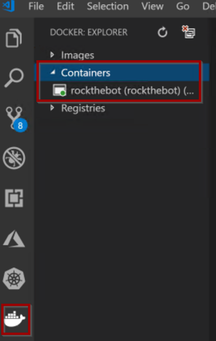You can list the running containers using Docker CLI:
open a command prompt or Powershell and typedocker ps. -
You can now repeat the steps
1to3for the ServicesProviderWeb folder. The build process is exactly alike the previous one.You will notice the build command takes longer to run for ServicesProviderWeb. This is expected as the API application runs with the dotnet runtime 2.2 which needs to be installed in the container.
As a result, both containers should be up and running:

You may notice the ServicesProviderWeb container is marked as created. This means the container is not actually running. This is expected: Docker cannot bind to port 80 as the Bot container is already using it!
[Optional] Task 2 - Test the Bot in the container
Now both the Bot and the API were published in two separate containers, it’s important to remark you cannot run both containers at the same time because of the port conflict explained earlier. Therefore, you could only test one containerized app at a time.
Actually you could run the two containers at the same time by mapping the ServicesProviderWeb container port to a different one. This is very similar to the NAT concept of the IP networks and can be achieved by running the command:
docker run -d -p 5000:80 --name servicesproviderweb5000 servicesproviderweb
However, the Bot would still be unable to call the servicesproviderweb endpoint as a result of the apps running in separate containers and, thus, isolated from one another.
There are more articulated ways of solving this problem but they woult be out of scope for this lab.
If you built the Bot application first, RockTheBot should be the container running. You can test the Bot using the Bot Framework Emulator repeating the same steps done earlier (Exercise 2.4) but using the production endpoint this time:

In case you are unable to connect to the Bot (no welcome message is displayed and if you try to type a message you get the error couldn’t send. retry), this could be a bug in the Emulator. To sort it out make sure the Bot Framework Emulator is setup as follows:
a. Click on the settings gear, bottom left:
b. Make sure the Emulator is set to use ngrock for local addresses (bypass must be disabled)
c. Typelocalhostin the *localhost override field. Delete it in case it was already populated.
d. Save the settings, close the settings tab and restart the conversation
The Bot welcome message should now appear.


Task 3 - Deploy the containers to ACR
Once both the Bot and the API apps are containerized, the next step is to publish them to an online registry. Docker Hub, from where you downloaded the base images for your containers, is an example of a public registry.
For Azure workloads, the Azure Container Registry service can be used to host container images.
ACR is a private registry and requires authenticated access.
In order to publish a container image to any container repository service, the first step is to tag it accordingly.
The tag, in the context of a container image, is both a labling and versioning identifier. Typically an image name consists of 3 parts:
registryIdentifier/imageName:version
While theversiontag can be omitted and defaults to latest, theregistry identifiermust exist in order for a docker image to be pushed to a remote registry.
Once the image is tagged, it can be pushed to the registry using the Docker CLI.
-
In the previous tasks you created two images: rockthebot and servicesproviderweb. If you open VS Code and inspect the Docker: Explore panel expanding the Images list you will see both images lack a registry identifier.
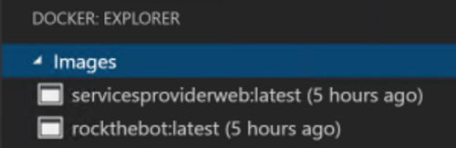
You can also ispect the output of the command
docker image ls -
To find the right registry identifier to use, browse to the Azure Portal: https://portal.azure.com
Select the Azure Container Registry you created in the first exercise: yourAliasACR. In the overview panel, copy the Login server property:
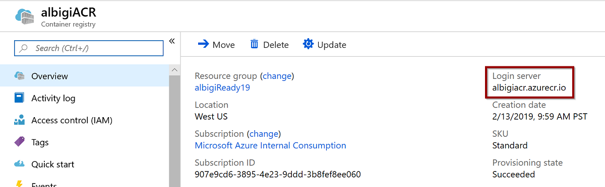
youraliasacr.azurecr.iois the registry identifier to use. -
It is now time to tag the container image.
- Open VS Code and click on the Docker: Explorer extension button
- Expand the Images list and right-click on the first image to tag: rockthebot
- Select Tag image and type
youraliasacr.azurecr.io/rockthebotas tag - Confirm with OK: a new image with the desired tag is added to the list


Alternatively, you can tag the image using the Docker CLI by running:
docker tag rockthebot youraliasacr.azurecr.io/rockthebot -
Once the image is properly tagged, it is ready to be pushed to the remote registry.
- Open a new Powershell or command prompt and type:
az acr login --name youraliasacr - If you previously authenticated to Azure, you should see Login Succeeded. Alternatively, follow the login prompt until the command returns.
- At this time, Docker is authenticated to ACR and the images can be pushed to the registry.
- In Powershell or the command prompt type:
docker push youraliasacr[]().azurecr.io/rockthebot - The operation might take a while to complete and you should see the progress in the command output:
The push refers to repository [albigiready19acr.azurecr.io/rockthebot] 4ac7f152bb98: Pushed 79a0035d08aa: Pushed c2734b0f7482: Pushing [=======> ] 21.86MB/154MB 027f3db1c2f7: Pushing [==================================================>] 8.014MB f0296b566559: Pushing [==================> ] 16.03MB/43.75MB 3c816b4ead84: Waiting
- Open a new Powershell or command prompt and type:
-
Eventually tag the container image servicesproviderweb with
youraliasacr.azurecr.io/servicesproviderweband push it to ACR repeating the previous steps from3to5.
By this time, both container images should be uploaded to the ACR registry. Browse to the Azure Portal and inspect the ACR resource blade. You should see both images listed within the Repositories section:

EXERCISE 4 - CONFIGURE AKS
In this exercise you will configure AKS to pull the container images from ACR and create the services cluster. Eventually, you will test the Bot running in AKS.
Task 1 - Create a new service in AKS
Kubernetes can be managed via a command line interface, named kubectl, which also exposes a web UI for easier management.
-
kubectl should be already available on your system. Open a new Powershell and make sure it is available by typing:
Get-Command kubectl -
Should kubectl not be available, you can install it by running
az aks install-cli -
The very next step is to authorize your remote cluster for management by the local instance of kubectl. In the Powershell window type:
az aks get-credentials --resource-groupyourRGname--nameyourAKSname
You can lookup both the AKS name and the Resource Group it belongs to by opening the Azure Portal and opening the AKS resource from the all resources view
After running the command you should get a confirmation message:
Merged "youraliasaks" as current context in C:\Users\Ready19\.kube\config -
Now kubectl is ready and connected to your cluster. You are ready to explore the GUI. In Powershell run:
az aks browse --resource-groupyourRGname--nameyourAKSname
Wait a few seconds for the proxy to be online and the browser to open the Kubernetes UI.az aks browseconnects you to your cluster and provides a graphical management interface. The connection to the cluster might become stale after a while: if you notice the UI stops refreshing or responding, make sure to terminate the command and run it again. -
AKS automatically deploys some services to the cluster. One of those is the kubernetes service which will be listed in the available services.
Actually AKS deploys many other services in different namespaces. You can think of namespaces as groups of services, isolated from one another. This is more of a logical grouping rather than a physical one, since services from different namespaces can be deployed to the same cluster nodes.
For further information on services, pods, nodes and namespaces you can check the Kubernetes docs. -
Before deploying the containers to the cluster, you need to grant AKS the required permissions to pull container images from your Container Registry.
- Browse to the Azure Portal and select your ACR instance:
youraliasACR - Select Access control (IAM) and then click on Add > New Role Assignment
- A new blade opens; select:
- Role:
ACRPull - Assign access to:
Azure AD user, group or service principal - Select: you need to pick the service principal linked to your AKS instance. The default name would be in the form
youraliasaksSP-DateOfCreation
- Role:
- The AKS service principal is now listed into the Role Assignment tab

- Browse to the Azure Portal and select your ACR instance:
-
Both container images app are now ready to become a new service in the cluster. For these services, we can use the default namespace.
In the Kubernetes UI click on the Create button, top right of the screen.
You can either enter a YAML file or create a new service manually. Create a new service at this time: select Create an app. Fill in the form as follows:
-
App name:
rockthebot -
Container image: full image tag of the container, e.g:
youraliasacr.azurecr.io/rockthebot -
Number of pods: select 3
Pods are the smallest unit of work in a Kubernetes cluster. They represent the single application instances running and can be in most cases associated to the number of containers being deployed.
-
Service: set it to
Internalas the Bot should not be directly published on the Internet. -
Port mapping: Both Port and Target port must be
80(default HTTP port) as exposed by the container. -
Confirm by hitting Create at the bottom of the screen.
Be aware that Pods are distinct instances of the container. You should plan for a shared way to manage state if your services are stateful.
-
-
To deploy the services API, you can repeat the previous steps and make sure to call the new service
servicesproviderweband pull the imagealbigiready19acr.azurecr.io/servicesproviderweb.
This is important as this name is used by the internal AKS DNS service to map a service name to its Pods.The servicesproviderweb service to be deployed should resemble the following configuration:

-
You have now created two services named rockthebot and servicesproviderweb in your AKS. Two deployments with the same name are also available and you can check on their status by inspecting the Kubernetes UI dashboard or simply by running
kubectl get deployment.
In Kubernetes a deployment is an objects defining a desired state for Pods and ReplicaSets. The Deployment Controller enforces the configuration defined in the deployments by changing the state at a controlled rate.
A typical scenario where deployments are useful is when a service needs to be updated (for instance, a newer image needs to be pulled from a container registry). The service deployment definition is changed and the Deployment Controller updates the Pods one by one in order to honor the replicas target. In such a way the service gets updated with no downtime and the new version is rolled over the previous.
To know more about deployments, consult the Kubernetes documentation.
Task 2 - Configure the reverse proxy
At this stage both the bot and the service API are not publicly available and can only communicate within the AKS cluster.
While the services API should not be exposed to the Internet, the bot must have a publicly available HTTPs endpoint in order to be published.
You can expose a public endpoint for the bot by creating a reverse proxy in AKS. The reverse proxy should also expose a HTTPs endpoint in order for the Azure Bot Service to connect to it.
There are several reverse proxy solutions that can be deployed in a container. However the nginx-ingress project, based on the popular Linux nginx web browser, is possibly the easiest to configure in a Kubernetes cluster.
-
First, you need to install the nginx ingress controller itself. Open a Powershell or command prompt and type the following commands
kubectl apply -f https://raw.githubusercontent.com/kubernetes/ingress-nginx/master/deploy/mandatory.yaml kubectl apply -f https://raw.githubusercontent.com/kubernetes/ingress-nginx/master/deploy/provider/cloud-generic.yamlThe two yaml files above are used to create a dedicated namespace in AKS, named ingress-nginx where all the nginx-related components and dependencies are installed.
You can inspect the two files to find out more: simply browse to the two URLs above. -
Once the actual reverse proxy is installed, you need to identify its public IP address:
kubectl get service --namespace ingress-nginxTake note of the External-IP of the service, which is the public IP the reverse proxy is listening on.
In case the External-IP shows as pending, wait a moment for Azure to deploy a new public IP resource to AKS, then try again.
-
You now need to map the public IP of the reverse proxy to a DNS name:
-
Identify the public IP resource in Azure:
az network public-ip list --query "[?ipAddress!=null]|[?contains(ipAddress, 'X.X.X.X')].[id]" --output tsvWhere X.X.X.X is the public IP identified earlier.
You should obtain a resource id like the following:
/subscriptions/907e9cd6-3895-4e23-9ddd-3b8fef8ee060/resourceGroups/MC_albigiready19_albigiready19aks_westus/providers/Microsoft.Network/publicIPAddresses/kubernetes-a0065c7942dc911e9a902c6e728c24c9Take note of the trailing resource identifier, kubernetes-a0065c7942dc911e9a902c6e728c24c9 in the example above.
-
Open the Azure Portal and select All Resources from the menu. Then paste the partial IP identifier just found into the resource search box:

Click on the resource of type Public IP address from the list and select Configuration:
- make sure the IP is marked as static
- type the DNS label name you want to use for this IP (hint:
youraliasrockthebot) - take note of the exact DNS name used as you will use it later
- confirm the DNS name by clicking Save

The DNS name can be different from your AKS cluster name, it just needs to be unique.
In case you get a validation error, you may have picked a name which is already existing. Try using a different one.
You can also update the DNS name of an IP by using the Azure command line:
az network public-ip update --ids <FULL_PUBLIC_IP_RESOURCE_ID> --dns-name "<DNS_NAME>"
-
-
Once the reverse proxy has a public IP with a DNS name linked to it, it can be resolved and reached from the Internet.
However the bot still requires a SSL endpoint to be published which, in turn, requires a SSL certificate to be installed on the reverse proxy.You could obtain a certificate by asking a certification authority, but that would take some time and money.
Luckily it exists a non-profit project named LetsEncrypt https://letsencrypt.org/ which allows you to create SSL certificates for free using the ACME protocol.LetsEncrypt can be used in combination with a Kubernetes service named cert-manager in order to dynamically generate SSL certificates for the reverse proxy endpoints.
-
Start installing cert-manager in a dedicated Kubernetes namespace.
Run the batch fileinstall-cert-manager.batlocated in the main solution directory, specifically in the Ready19-RockTheBot > yaml folder.
The batch file executes these commands:kubectl create namespace cert-manager kubectl label namespace cert-manager certmanager.k8s.io/disable-validation=true kubectl apply -f https://raw.githubusercontent.com/jetstack/cert-manager/release-0.6/deploy/manifests/00-crds.yaml kubectl apply -f https://raw.githubusercontent.com/jetstack/cert-manager/release-0.6/deploy/manifests/cert-manager.yaml --validate=false kubectl apply -f create-cluster-issuer.yamlVerify there are no errors in the script execution.
-
In the Ready19-RockTheBot > yaml folder, locate the file
create-routes.yamland edit it with a text editor (right click on the file > Edit with Notepad++).Edit line 12 and line 15 and replace the placeholder
<DNS NAME HERE>with the reverse proxy IP DNS name specified earlier.The resulting DNS name must be a FQDN name, meaning the Azure suffix (e.g: .westus.cloudapp.azure.com) must be included.
The resulting file should look like this:
apiVersion: extensions/v1beta1 kind: Ingress metadata: name: rockthebot-ingress annotations: kubernetes.io/ingress.class: nginx certmanager.k8s.io/cluster-issuer: letsencrypt-prod nginx.ingress.kubernetes.io/rewrite-target: / spec: tls: - hosts: - albigiready19rockthebot.westus.cloudapp.azure.com secretName: rockthebot-cert rules: - host: albigiready19rockthebot.westus.cloudapp.azure.com http: paths: - path: / backend: serviceName: rockthebot servicePort: 80Save the file, open a command prompt or powershell in that directory and type:
kubectl apply -f create-routes.yaml
-
-
If the previous steps were successful you should:
-
See a certificate was issued to the reverse proxy endpoint for the DNS name specified:
kubectl describe certificateName: rockthebot-cert Namespace: default Labels: <none> Annotations: <none> API Version: certmanager.k8s.io/v1alpha1 Kind: Certificate Metadata: Creation Timestamp: 2019-02-10T18:49:38Z Generation: 1 Owner References: API Version: extensions/v1beta1 Block Owner Deletion: true Controller: true Kind: Ingress Name: rockthebot-ingress UID: 9dd87140-2d64-11e9-a902-c6e728c24c92 Resource Version: 2060488 Self Link: /apis/certmanager.k8s.io/v1alpha1/namespaces/default/certificates/rockthebot-cert UID: 9dddb209-2d64-11e9-a902-c6e728c24c92 Spec: Acme: Config: Domains: albigiready19aks.westus.cloudapp.azure.com Http 01: Ingress: Ingress Class: nginx Dns Names: albigiready19aks.westus.cloudapp.azure.com Issuer Ref: Kind: ClusterIssuer Name: letsencrypt-prod Secret Name: rockthebot-cert Status: Conditions: Last Transition Time: 2019-02-10T18:50:05Z Message: Certificate is up to date and has not expired Reason: Ready Status: True Type: Ready Not After: 2019-05-11T17:50:04Z Events: <none>The certificate private key is saved as a Kubernetes secret named rockthebot-cert.
In case the certificate is renewed or redeployed, the secret must be deleted first in order for the right key to be used. -
See an ingress was created for the rockthebot endpoint:
kubectl get ingressNAME HOSTS ADDRESS PORTS AGE rockthebot-ingress albigiready19aks.westus.cloudapp.azure.com 80, 443 13h -
Be able to browse to the DNS name of the bot using a web browser, using HTTPS without getting certificate warnings and seeing the bot welcome page:
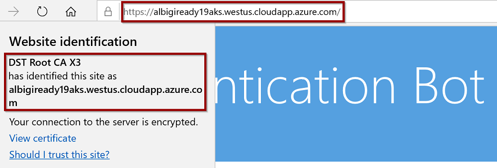
At this point, the bot is publicly reachable over HTTPS and it can be published using the Azure Bot Service!
-
Task 3 - Test the Bot
Before publishing the bot on the Azure Portal, you can test the bot and its services are properly working within AKS.
Open the Bot Framework Emulator and load the RockTheBot.bot file. You will notice the new endpoint is not yet configured: click on the + icon to add a new endpoint definition.
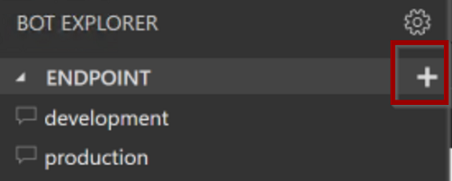
- Type the full URL in the Endpoint URL field, making sure to include the
/api/messagesroute suffix. - Choose a friendly name of your choice for the endpoint.
- Click on Submit

A new endpoint is now available in the Emulator. Double click on it to open a new conversation with the bot at the public endpoint.
You should be able to interact with the bot:

One of the main reasons why people move their workloads to AKS is scaling. AKS allows you to easily scale your cluster up (larger node size) and out (deploying more nodes) without any service disruption. Whenever scaling occurs and new nodes are addedd or remove from the cluster, Kubernetes takes care of updating the cluster configuration in a way that no service downtime is experienced. In addition to scaling the cluster, individual deployments can also be scaled so that most demanding services can be assigned more resources with respect to lower demanding workloads.
[OPTIONAL] EXERCISE 5 - PUBLISH THE BOT
In this exercise you will create a new Azure Bot Service to publish your AKS Bot on the Teams and Skype channels.
Now that the bot is ready you can proceed to create the Azure Bot Service resource to link it to the channels you care for.
Task 1 - Create the Bot Service
The very first step is to create the Azure Bot Service itself. Connect to the Azure Portal and create a new resource of type Bot Channels Registration. Configure the new resource as follows:
-
Bot name: pick a unique name for the resource (hint:
youraliasRockTheBot) -
Subscription & Resource group: leave the defaults for the account you are using
-
Location:
West USfor reduced latency -
Pricing Tier:
S1 -
Messaging endpoint: here you need to provide the FQDN (full DNS name) of your messaging endpoint, including the messaging API route. This is the very same you used when testing the bot earlier and should be similar to
youraliasaks.westus.cloudapp.azure.com/api/messages -
Application Insights:
Off -
Microsoft app ID and password: leave the default,
Auto create App ID and password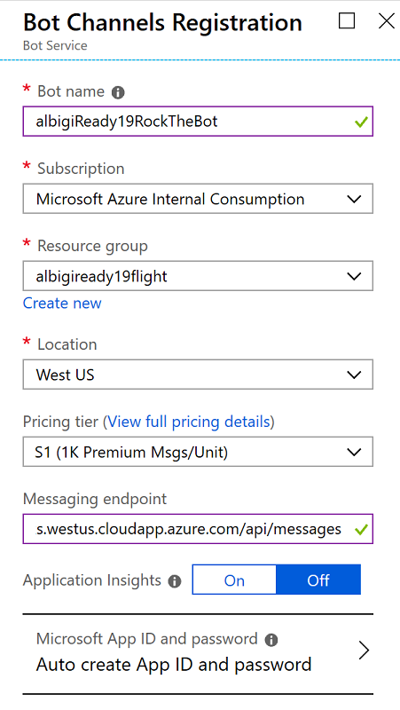
-
Hit Create and wait until Azure deploys the resource (it should take less than a minute)
As soon as you get notified the new Bot Channels Registration resource is ready:
- Open the Azure Active Directory blade from the left menu bar:

- Select App registrations (preview)
- Type your bot name into the search box and select the newly created bot
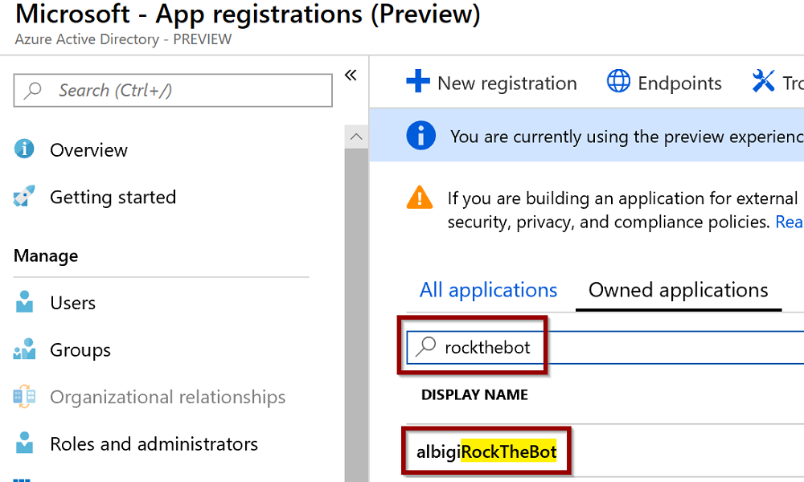 - Select Certificates & secrets, then click New client secret

- Input a description (can be any text) and leave the default expiration (1 year), then hit Add
- Make sure to copy the key now as you won’t be able to do it later on and a new key will have to be created (max 2 concurrent keys are allowed). Save the app key somewhere as you will need it later.
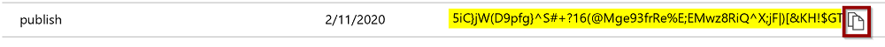 - Click on Overview and take note of the Application (client) id too

Task 2 - Configure the AKS secrets
Next, you need to create a Kubernetes secret to store the app ID and password and expose it to the bot application via environment variables.
-
Open a powershell or command prompt and type:
kubectl create secret generic absappregistration --from-literal=appId='<YOUR APP ID>' --from-literal=password='<YOUR APP SECRET>'
Replace your app id and secret with the literal values copied in the previous step. The command to issue should look like the following:kubectl create secret generic absappregistration --from-literal=appId='9510db6f-be2e-422f-9773-2103c3661095' --from-literal=password='{xIgZKJ@3$skb4vu{=|}v6$[k?R%7-sO[=C;U}dd(*0}m^' -
To verify the secret was properly set in AKS, run:
kubectl describe secret absappregistration
This should return a similar output:Name: absappregistration Namespace: default Labels: <none> Annotations: <none> Type: Opaque Data ==== appId: 36 bytes password: 46 bytes -
Next step is to make the secret available to the Kubernetes Pods via environment variables. In a powershell or command prompt run:
az aks get-credentials --resource-groupyourRGname--nameyourAKSnameWhen the Kubernetes UI appears, click on the rockthebot deployment details and select View/edit YAML

Scroll down to line 37 and locate the container name and image definitions. Add a new line afterwards and paste the following json text:
"env": [ { "name": "_ROCKTHEBOTAPPID", "valueFrom": { "secretKeyRef": { "name": "absappregistration", "key": "appId" } } }, { "name": "_ROCKTHEBOTAPPPWD", "valueFrom": { "secretKeyRef": { "name": "absappregistration", "key": "password" } } } ],Be careful and pay attention to the commas. An invalid json text would invalidate the deployment.
The resulting text should look like this:
"spec": { "containers": [ { "name": "rockthebot", "image": "youraliasacr.azurecr.io/rockthebot", "env": [ { "name": "_ROCKTHEBOTAPPID", "valueFrom": { "secretKeyRef": { "name": "absappregistration", "key": "appId" } } }, { "name": "_ROCKTHEBOTAPPPWD", "valueFrom": { "secretKeyRef": { "name": "absappregistration", "key": "password" } } } ], "resources": {}, "terminationMessagePath": "/dev/termination-log", "terminationMessagePolicy": "File", "imagePullPolicy": "Always", "securityContext": { "privileged": false } } ], ...Hit Update and wait a few moments as Kubernetes starts to update your Pods.
You can monitor the update progress by refreshing the UI dashboard or regularly typing
kubectl get deployment rockthebotin a powershell or command prompt.Once the update is complete all the Pods will be running the updated containers, which means the bot registration id and password is available to the bot app via the environment variables _ROCKTHEBOTAPPID AND _ROCKTHEBOTAPPPWD.
Application registration secrets are required for the bot to authenticate to the Azure Bot Framework and prove it is really the bot application for which the channel registration is intended.
Usually the app id and secret are added to the bot configuration file, however that would require to hardcode them upon deploying the app in the container image. To overcome this problem and take advantage of the Kubernetes secret, the bot code reads the app id and secret from the above mentioned environment variables.
Check the RockTheBot code at line 83 of the Startup.cs file to double check!
Task 3 - Create the channels
At this time the bot should be able to connect to its channel registrations. To verify everything is working, open the Azure Portal and browse to your Bot channels registation resource you created earlier.
Select Test in Web Chat from the menu, wait for the bot authentication to complete and type some text to the bot: you should receive the bot’s welcome message!
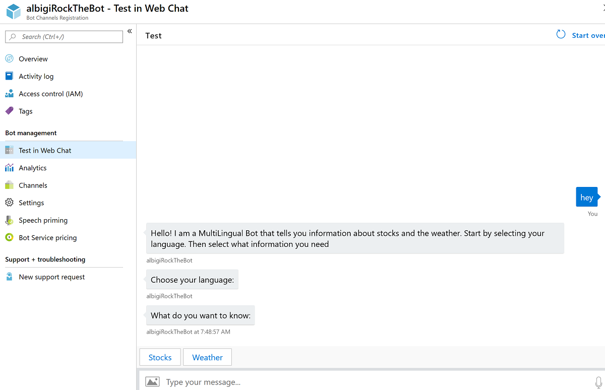
As the very last step, you need to configure the Skype and Teams channels.
- In the Azure Portal browse to your Bot channels registation and select Channels
- Click on Skype to configure a new Skype channel

If you originally created the Bot Channel Registration resource without providing an endpoint URL and configured it at a later time, you may notice the Skype channel is already available.
- Switch to the Publish section and provide a bot description, then click Save
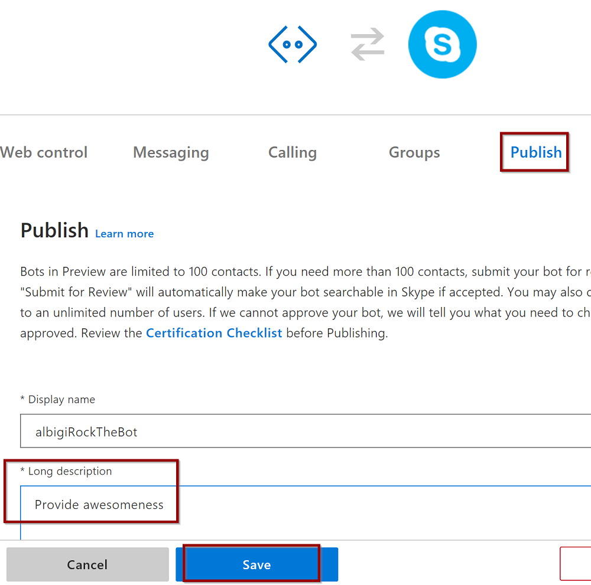 - Agree to the Terms of service: the Skype channel is now listed among the available channels.
- In the channels section, click on the newly created Skype channel:

- After clicking on Add to contacts you are prompted to login on Skype. The bot is now added to your contacts.
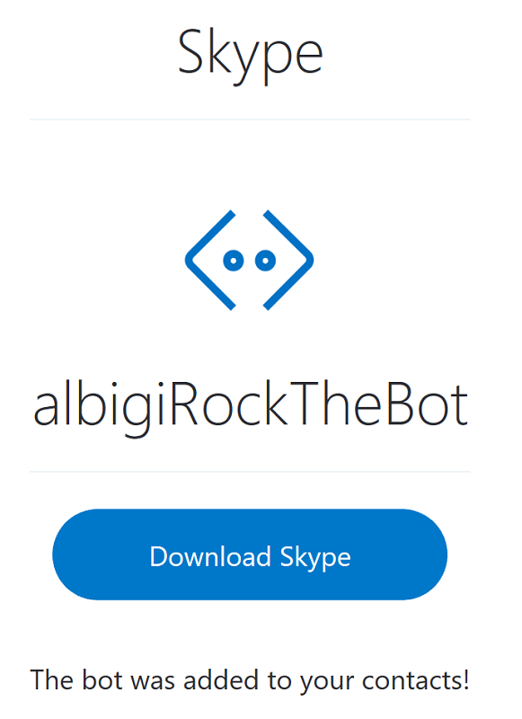 - If you open Skype on your own device you should find the bot among your contacts and be able to chat with it.

- The Teams channel can be added from the Channels section in the Bot channels registration resource in the Azure Portal.
- Click on the teams icon

- Confirm with Save and then Agree to the Terms of service
- Click on the teams icon
- Going back to the Channels view you can now see the Teams channel is added and clickable. If you click on Teams a new browser window opens. This is the link to chat with the bot and you can either use Teams online or the Teams client to interact with it.
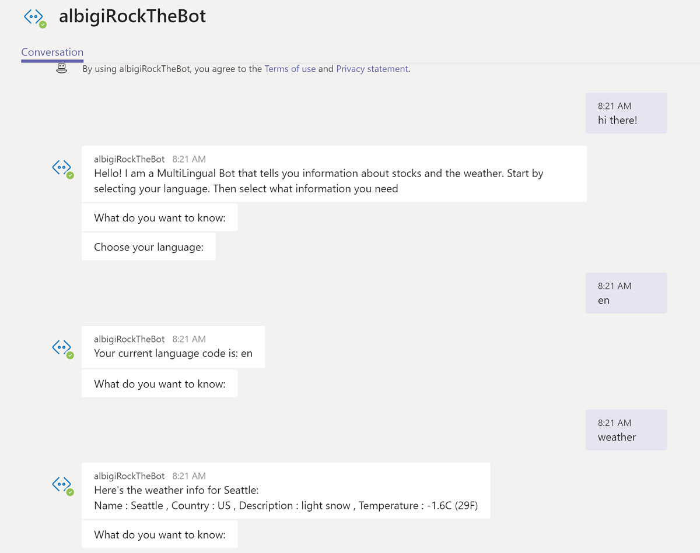
Unfortunately in Teams some features are not available. For instance, you cannot search the bot by name among your contacts. However if you follow the link and open a new conversation with the bot, you will have it in your Chat list for a later use.
WELL DONE!
EPILOGUE
THANK YOU
Congratulations! You made it through the end!
Thank you for taking this lab!
We enjoyed developing the lab and we sincerely hope it met your expectations!
LAB EVALUATION
Please take a minute to let us know what you think!
This is super important! All of your comments, recommendations, suggestions or complaints are extremely important to us! Your satisfaction is the ultimate driver that motivates us to work harder and better for the next time!